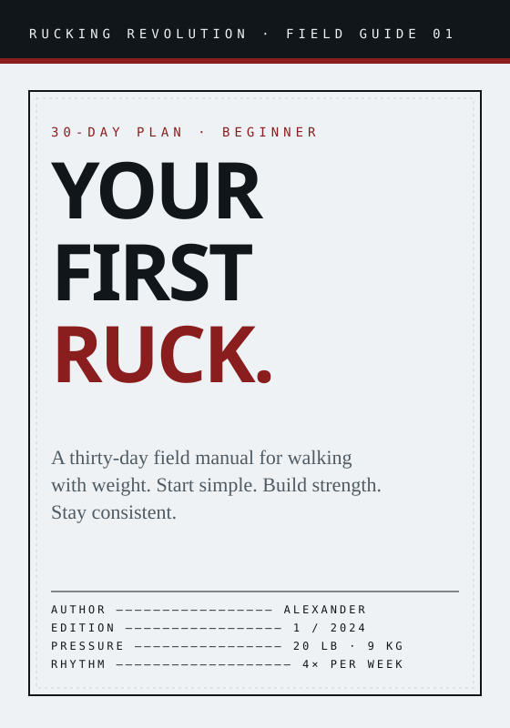
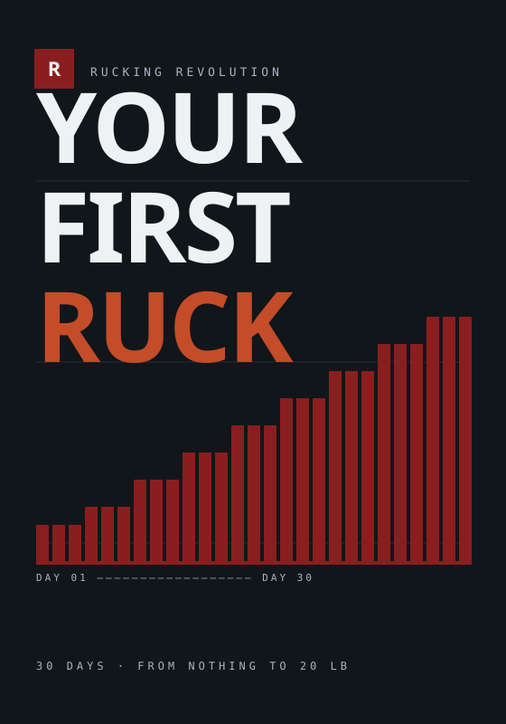
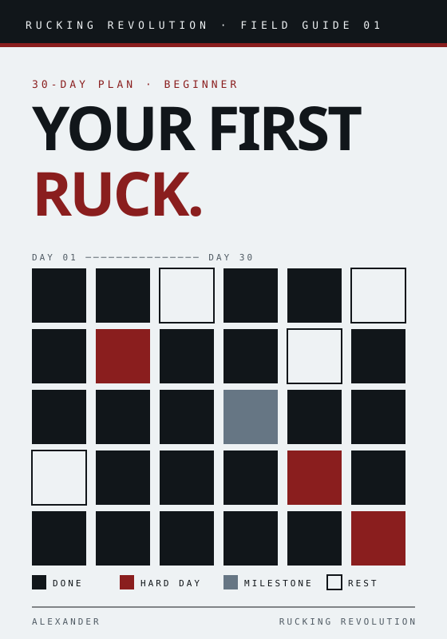

Specimen Sheet
Typographic only. Reads as a technical specimen — metadata instead of imagery. Civilian, calm, shelf-sober.
Three distinct approaches for the flagship field guide — all inside the same mineral-paper / charcoal / red / steel system. Direction C replaced with a calendar-grid approach that echoes the editorial illustrations.

Typographic only. Reads as a technical specimen — metadata instead of imagery. Civilian, calm, shelf-sober.

Charcoal ground. The 30-day progression visualized as a rising bar chart. Bold, data-forward, stands out on a shelf.

The 30-day plan as a filled grid — the cover is the plan. Shares the habit-calendar language already in the illustration system.